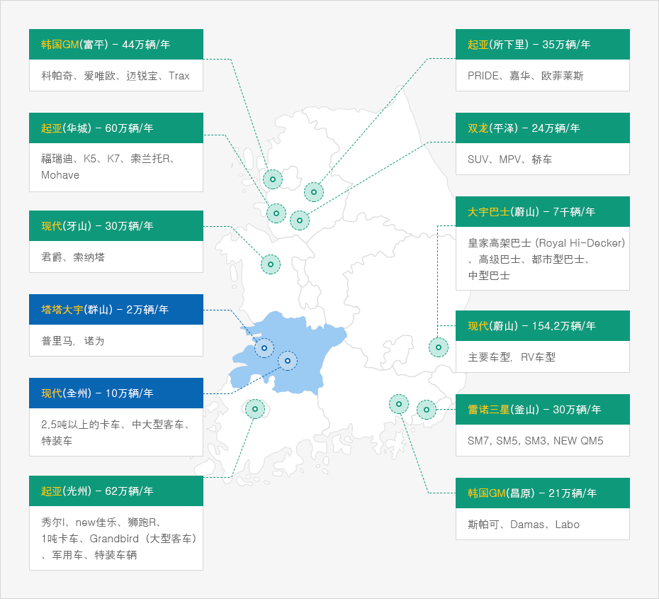
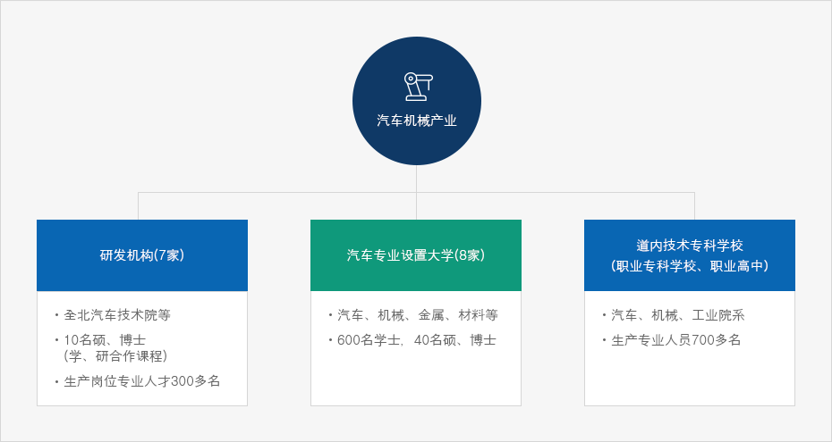

汽车、机械产业
- Home
- 主要产业
- 汽车、机械产业
运输时间三小时内的区域分布着13家汽车生产企业，共能生产470万台汽车


- 双龙（平泽）:24万辆/年 - SUV、MPV、轿车
- 韩国GM（富平）:44万辆/年 - 科帕奇、爱唯欧、迈锐宝、Trax
- 起亚（华城）:60万辆/年 - 福瑞迪、K5、K7、索兰托R、Mohave
- 타타대우(군산) - 2만 대/년 : 프리마, 노부스
- 现代（牙山）:30万辆/年 - 君爵、索纳塔
- 塔塔大宇（群山）:2万辆/年 - 普里马，诺为
- 起亚（所下里）:35万辆/年 - PRIDE、嘉华、欧菲莱斯
- 现代（全州）:10万辆/年 - 2.5吨以上的卡车、中大型客车、特装车
- 起亚（光州） : 62万辆/年 - 秀尔l、new佳乐、狮跑R、1吨卡车、Grandbird（大型客车）、军用车、特装车辆
- 韩国GM（昌原）:21万辆/年 - 斯帕可、Damas、Labo
- 雷诺三星（釜山）:30万辆/年 - SM7, SM5, SM3, NEW QM5
- 现代(蔚山) : 154.2万辆/年 - 主要车型，RV车型

具备国内屈指可数的汽车、钻土机、拖拉机生产企业
| 企业名称 | 产品 | 年生产力 | 位置 |
|---|---|---|---|
| 韩国通用群山工厂 | 轿车(科鲁兹、雪佛兰) | 成品车 280,000台、KD 540,000台 | 群山 |
| 现代汽车全州工厂 | 卡车、巴士、特装车 | 70,000台 | 莞州 |
| 塔塔大宇汽车 | 卡车 | 20,000台 | 群山 |
| 斗山工程机械群山工厂 | 钻土机、铲车 | 4,000台 | 群山 |
| 乐星农业设备全州工厂 | 拖拉机 | 20,000台 | 莞州 |
| 东洋物产益山工厂 | 拖拉机、插秧机、收割机 | 20,000台 | 益山 |
汽车、机械产业研发机关扶持企业活动
| 研发扶持机关(网站) | 扶持领域 | 位置 |
|---|---|---|
| 汽车融合技术院 (www.jiat.re.kr) |
研发扶持、工程改善、人才培养等 ※ 具备动力性能评价设备等130台 |
群山 |
| 电子配件研究院全北分院 | 汽车电装信誉评价、人才培养等 ※ 具备电波测定设备等20台 |
全州 莞州 |
| 全州机械碳素技术院 (www.kctech.re.kr) |
碳素材料技术开发、人才培养等 ※ 具备综合材料非破坏性检查设备等134台 |
全州 |
| KIST全北分院 (www.jbkist.re.kr) |
综合材料技术研究等 | 莞州 |
| 全北大学汽车配件· 金铸质量革新中心 (www.camtic.or.kr) |
产学共同研究、技术转移与人才培养等 | 全州 |
| 群山大学汽车配件技术革新中心 (www.katic.or.kr) |
产学共同研究、技术转移与人才培养等 | 群山 |
| 全北嵌入式系统研究中心 | 用于车辆的SOC开发 | 莞州 |
道内汽车、机械产业研发扶持机关提供符合人才

汽车机械产业
- 研发机构(7家)
- 全北汽车技术院等。
- 10名硕、博士（学、研合作课程）
- 生产岗位专业人才300多名
- 汽车专业设置大学(8家)
- 汽车、机械、金属、材料等
- 600名学士，40名硕、博士
- 道内技术专科学校（职业专科学校、职业高中）
- 汽车、机械、工业院系
- 生产专业人员700多名